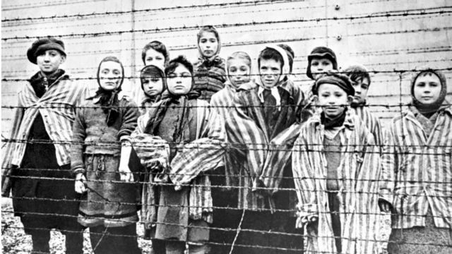

Concentration Camps
In 1933, the SS had operated a network of concentration camps, to hold Jews and other targets of the Nazi regime.
After the war began, the Nazis stopped expelling Jews to concentration camps and changed their tactics to just exterminating them, by using mobile death squads. They even exterminated Jews while invading other countries like Jews that lived in the Soviet Union.

Though the Nazis also imprisoned and killed Catholics, homosexuals, political dissidents and the disabled, above all they targeted Jews. Around 6 million jews were killed in German-occupied Europe by the end of the war.